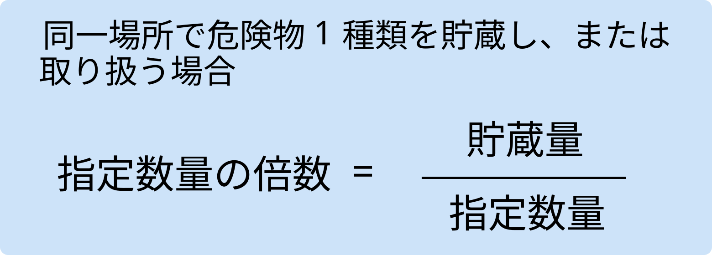
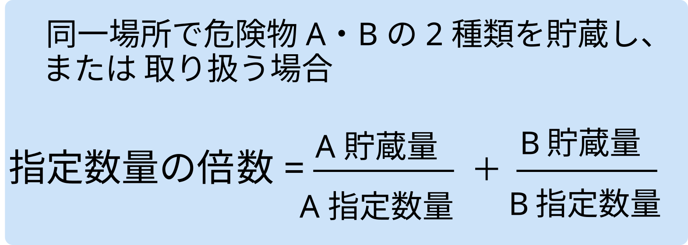

指定数量とは
指定数量とは、それぞれの危険物の危険性を踏まえて政令で定められた 「基準となる量」のことで、法令上の各種規制を適用するときの算定根拠になります。 指定数量は全国共通です。
一般に、危険性が高い物質ほど指定数量は少なく、危険性が低い物質ほど多く定められています。 例えば、特殊引火物に分類されるジエチルエーテルは 50L、 一方で危険性の低い動植物油類は 10,000 L に設定されています。
指定数量を超える量の危険物を貯蔵・取扱いする場合は、 消防法が規定する危険物施設（製造所・貯蔵所・取扱所）としての許可や 設備基準が必要であり、これら以外の場所での貯蔵・取扱いは認められません。
指定数量未満の危険物であっても、各市町村の火災予防条例において、 「位置・構造及び設備の技術基準」や「貯蔵・取扱いの基準」が定められており、 これらに従って管理する必要があります。
補足コラム
ざっくり言うと、「その危険物をどれくらい持ったら消防法の世界に入ってくるかを決めるライン」 が指定数量です。このイメージを持っておけば、条文の内容が整理しやすくなります。
政令別表第3：第4類 危険物の指定数量
| 品名 | 区分 | 指定数量 | 代表的な危険物の 物品名 |
|---|---|---|---|
| 特殊引火物 | 50L |
|
|
| 第1石油類 | 非水溶性 | 200L |
|
| 水溶性 | 400L |
|
|
|
アルコール 類 |
400L |
|
|
| 第2石油類 | 非水溶性 | 1000L |
|
| 水溶性 | 2000L |
|
|
| 第3石油類 | 非水溶性 | 2000L |
|
| 水溶性 | 4000L |
|
|
| 第4石油類 | 6000L |
|
|
| 動植物油類 | 10000L |
|
補足コラム
※ 一般的なドラム缶の容量は200Lです。これを基準にして、 指定数量が1倍・2倍・5倍・10倍・20倍・30倍・50倍になる量を イメージしておくと整理しやすくなります。
出る出るポイント！
- 第4類の指定数量は、すべてL（リットル）で示されます。
- ドラム缶1本＝200L を基準にすると、200L・400L・1000L・2000L・4000L・6000L・10000L といった代表的な指定数量を一気に覚えやすくなります。
- 「第1石油類」「第2石油類」「アルコール類」「動植物油類」などの品名と、 代表例の組み合わせは、そのまま選択肢に出やすい頻出パターンです。
ひっかけ注意！
- 「指定数量未満＝どこでも自由に置いてよい」ではありません。 各市町村の火災予防条例や「少量危険物」の基準で規制される点に注意しましょう。
- 同じ場所で複数の危険物を貯蔵・取扱う場合は、 後の項目で出てくる「指定数量の倍数」を合計して判定する問題が頻出です。
- 容器の容量と、実際に入っている危険物の量が違うケース （半分だけ入っているドラム缶など）の計算ミスがよく狙われます。
指定数量の倍数
指定数量の倍数とは、貯蔵または取扱う危険物の実際の数量を、 その物質の指定数量で割った値をいいます。
パターン① 1種類の場合

パターン② 2種類の場合

補足コラム
複数の危険物を同一場所で貯蔵または取扱う際、それぞれが指定数量未満でも、 合計量が指定数量の1倍以上に達すると「指定数量以上の危険物を貯蔵または取扱っている」と見なされ、 法令の規制対象となる。
出る出るポイント！
- 指定数量の倍数は「実際の数量 ÷ 指定数量」で求める。
- 倍数が1以上になると、その危険物は消防法の規制対象。
- 複数の危険物がある場合は、それぞれの倍数を合計して1以上かどうか確認する。
ひっかけ注意！
- 「指定数量未満なら、いくつあっても規制対象外」とは限らない。
- 問題文に「同じ場所で貯蔵・取扱い」とあれば、種類が違っても倍数を合算。
- ドラム缶などの容器容量（200Lなど）を使った計算問題では、単位（L）と個数の見落としに注意。
クイズ
ちょっとだけ、メモ！
※ 第4類の中でも、指定数量が特に小さい50L（特殊引火物）と、 第1石油類の200L／400Lは頻出なので、グループでまとめて覚えておきましょう。
次は第1章5節：「製造所・貯蔵所・取扱所の区分」に進みます。